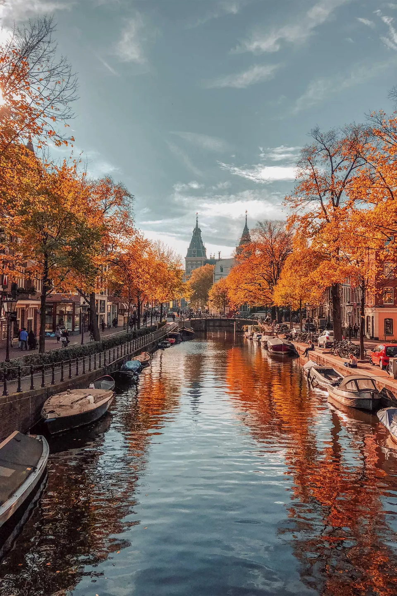
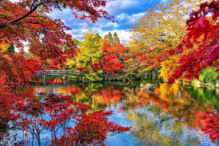
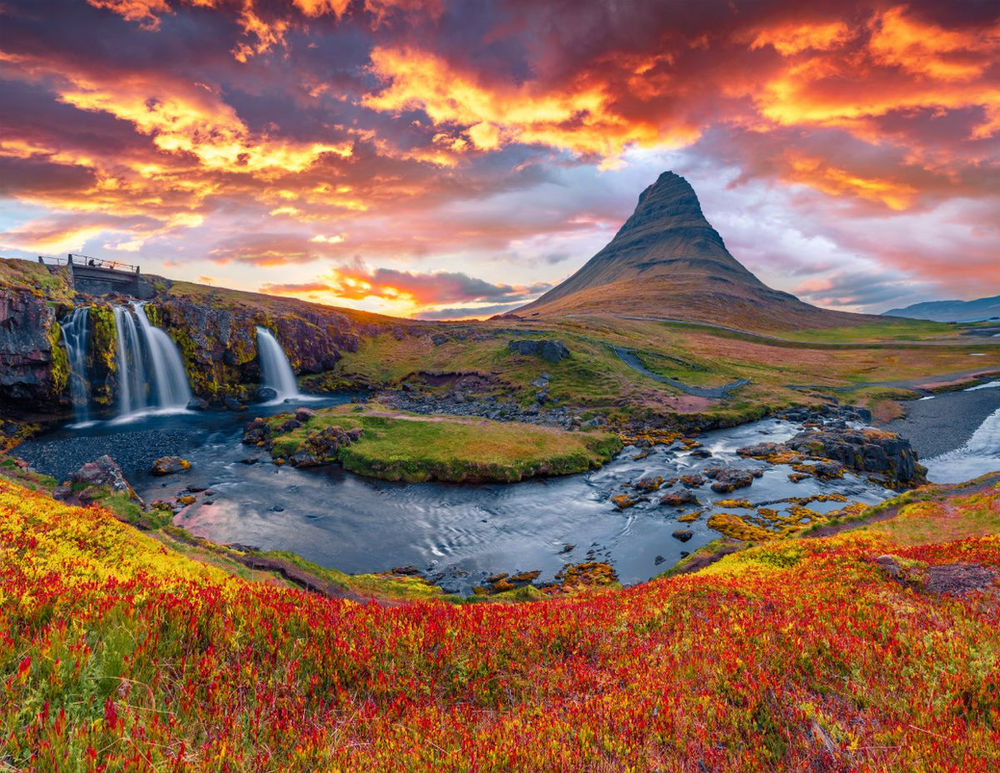

~ Șase motive pentru a vizita Europa toamna ~
- Sezonul de toamnă din Europa este pur și simplu uimitor, cu culori vibrante de toamnă în orașe și peisaje, iar soarele scăzut și ceața dimineții devreme învăluie peisajul rural și arhitectura, făcând fiecare vedere pe Instagram demnă!
- Vremea va avea încă un pic de căldură de vară, iar o vară indiană în septembrie este o posibilitate reală.
- Mai puțini turiști călătoresc în lunile de toamnă, toți se pregătesc pentru iarna care urmează sau își revin din vacanța de vară, astfel încât atracțiile și tururile sunt mai liniștite.
- Zborurile, închirierea de mașini, prețurile la hoteluri și cazare vor fi mai ieftine în lunile din sezonul umăr dintre vară și iarnă.
- Mâncarea de sezon este cea mai bună toamnă, cu recolta și multe specialități disponibile.
- Gândește-te la ciuperci lemnoase delicioase, dovleci îngrijiți încet, castane delicioase prăjite și vin proaspăt presat și vei avea aromele toamnei.
- Festivalurile de toamnă sunt obișnuite în toată Europa, deoarece continentul sărbătorește o vară reușită și se pregătește pentru frigul iernii. De la festivalul Andalucia Jamon și festivalul vinului de la Castelvetro, în Italia, până la festivalul de artă Paris Nuit Blanche și, desigur, Haloween, se întâmplă multe!

Burges, Belgia

Amsterdam, Olanda

Fuji, Japonia

Islanda